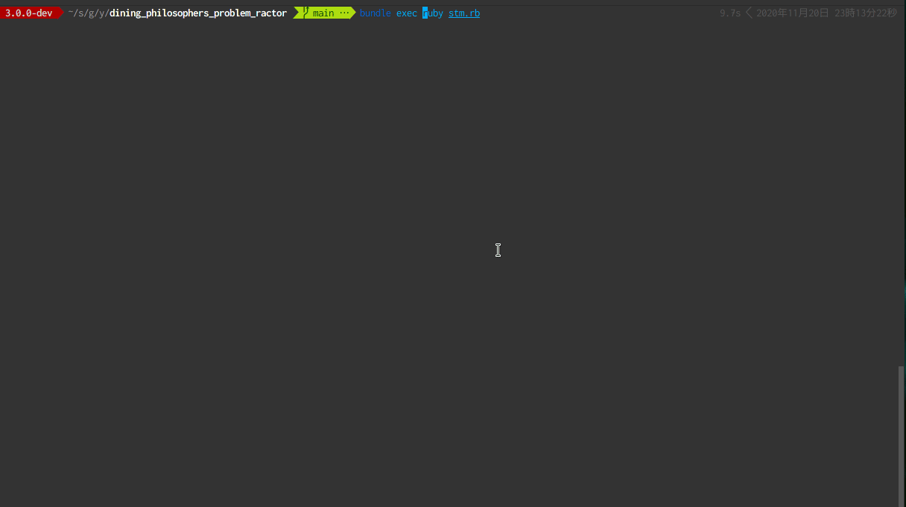

Ractorで「食事する哲学者の問題」を解く
Ruby に Software Transactional Memory (STM) を入れようと思った話 を読んで、そういえば STM で 「食事する哲学者の問題」 を解ける、という話を見たなと思い、やってみた。
食事する哲学者の問題
「食事する哲学者の問題」について軽く説明をする。N 人の哲学者が円卓に座り、食事をとる。それぞれの哲学者の間にはフォークが置かれており(N 人なら N 個になる)、自分の両側のフォークを手に持つことができれば食事ができる。詳しくは上記 Wikipedia を見るとよい。
まずはデッドロックを発生させてみる
素直に悲観的ロックでこの問題を解くとデッドロックが発生する。Ractor を使って書くと以下のようになる。
require 'securerandom'
NUM_OF_PHILOSOPHERS = 5
class Philosopher
def initialize(name, left, right)
@name = name
@left = left
@right = right
end
def eat
puts "#{@name} eating..."
sleep SecureRandom.random_number * 5
end
def think
puts "#{@name} thinking..."
sleep SecureRandom.random_number * 5
end
def take_forks
@left << :lock
@left.take
@right << :lock
@right.take
end
def put_forks
@right << :unlock
@right.take
@left << :unlock
@left.take
end
def start
loop do
take_forks
eat
put_forks
think
end
end
end
forks = NUM_OF_PHILOSOPHERS.times.map do
# Mutexはshareableではないので、Ractorで包む
Ractor.new do
mutex = Mutex.new
while msg = Ractor.receive
case msg
when :lock
mutex.lock
Ractor.yield(:ok)
when :unlock
mutex.unlock
Ractor.yield(:ok)
end
end
end
end
rs = NUM_OF_PHILOSOPHERS.times.map do |i|
Ractor.new("philosopher #{i + 1}", forks[i % NUM_OF_PHILOSOPHERS], forks[(i + 1) % NUM_OF_PHILOSOPHERS]) do |n, l, r|
Philosopher.new(n, l, r).start
end
end
Ractor.select(*rs)Mutex を包んだ Ractor を左と右のフォークとして哲学者に渡し、それぞれのロックが獲得できたなら、食事をする。という動きになっている。
これを実行すると以下のようにデッドロックが発生する。
$ ruby --version
ruby 3.0.0dev (2020-11-20T07:04:45Z master fac2498e02) [x86_64-linux]
$ ruby lock.rb
<internal:ractor>:38: warning: Ractor is experimental, and the behavior may change in future versions of Ruby! Also there are many implementation issues.
philosopher 1 eating...
#<Thread:0x0000557c6822c330 run> terminated with exception (report_on_exception is true):
philosopher 3 eating...
lock.rb:53:in `lock': <internal:ractor>:74:in `select': thrown by remote Ractor. (Ractor::RemoteError)
from lock.rb:68:in `<main>'
<internal:ractor>:130:in `take': thrown by remote Ractor. (Ractor::RemoteError)
from lock.rb:24:in `take_forks'
from lock.rb:38:in `block in start'
from lock.rb:37:in `loop'
from lock.rb:37:in `start'
from lock.rb:65:in `block (2 levels) in <main>'
lock.rb:53:in `lock': deadlock; recursive locking (ThreadError)
from lock.rb:53:in `block (2 levels) in <main>'STM を使って解く
STM で解く「食事する哲学者の問題」 - あどけない話 にあるように STM を使うと、デッドロックを回避できるようだ。
ractor-tvar を使えば同じように実装できるのかやってみる。
まずは Gemfile を作って、ractor-tvar をインストールしておく
# Gemfile
source 'https://rubygems.org'
git_source(:github) { |repo| "https://github.com/#{repo}.git" }
ruby '3.0.0'
gem 'ractor-tvar'$ bundle installこの後、手元で ractor-tvar のサンプルコードを動かしたところ cannot load such file -- ractor/tvar/ractor_tvar.so (LoadError) というエラーがでた。そのため ractor_tvar.so の場所を手動で変更して回避した。自分の手元環境だけかもしれないが一応issue を起票しておいた。(2020/11/24 追記) この問題は 0.2.0 で修正された。
STM での実装だが、今回は以下のように実装した。
# frozen_string_literal: true
require 'securerandom'
require 'ractor/tvar'
NUM_OF_PHILOSOPHERS = 5
class Philosopher
def initialize(name, left, right)
@name = name
@left = left
@right = right
end
def eat
puts "#{@name} eating..."
sleep SecureRandom.random_number * 5
end
def think
puts "#{@name} thinking..."
sleep SecureRandom.random_number * 5
end
def take_forks
loop do
Ractor.atomically do
@left.value = @name.freeze if @left.value == nil
end
break if @left.value == @name
end
loop do
Ractor.atomically do
@right.value = @name.freeze if @right.value == nil
end
break if @right.value == @name
end
end
def put_forks
Ractor.atomically do
@right.value = nil
@left.value = nil
end
end
def start
loop do
take_forks
eat
put_forks
think
end
end
end
forks = NUM_OF_PHILOSOPHERS.times.map do
Ractor::TVar.new
end
rs = NUM_OF_PHILOSOPHERS.times.map do |i|
Ractor.new("philosopher #{i + 1}", forks[i], forks[(i + 1) % NUM_OF_PHILOSOPHERS]) do |n, l, r|
Philosopher.new(n, l, r).start
end
end
Ractor.select(*rs)Ractor::TVar に自分の名前を入れることでロックの代わりとした。
これを実行してみると以下のように、デッドロックになることなく進むことが確認できた。

(2020/11/27 追記) Ractor::RetryTransaction を使えばループいらないのではという指摘をいただいたのでそのように修正した。感謝。
まとめ
STM を使うことで、食事する哲学者の問題のデッドロックを回避できた。 今回作ったコードは yoshitsugu/dining_philosophers_problem_ractor として GitHub に公開してある。